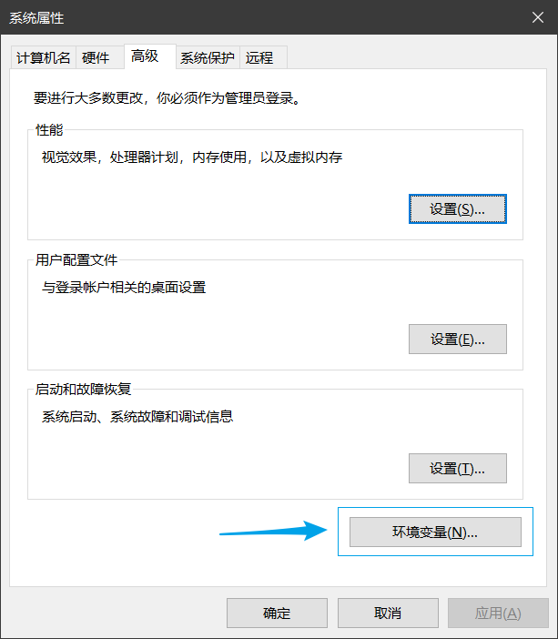
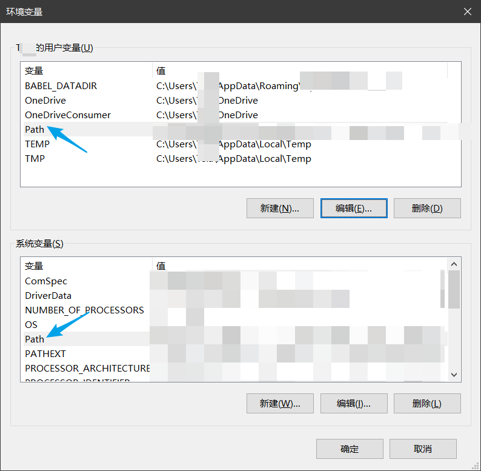
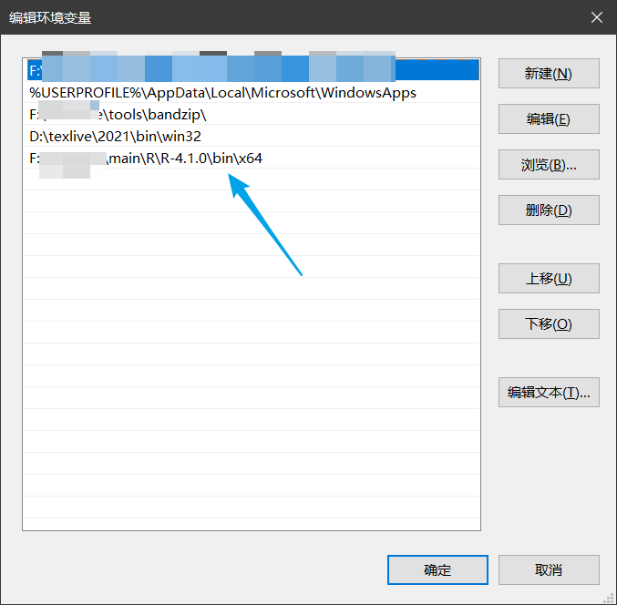
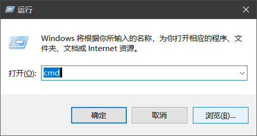

2 关于 R CMD command
事实上，绝大多数用户在日常使用中并不会涉及到 R CMD command 这个工具。相反，目前在包的开发领域，也越来越多地被devtools::check() 所代替。同样地，也有 rcmdcheck 包的出现，这些都在让 R cmd check 逐渐淡出大多数用户的实现。除此以外，你也选择使用rhub 包进行检查。
但从很多问题的解决上来讨论，面向更多的使用者，把R CMD command 的很多知识点讲述清楚，仍是有必要。
除此以外，也涉及到很多基本知识的讲解。
2.1 添加环境变量
首先，对于大多数用户而言，是第一次将 R语言添加到环境变量中来，这里简要地介绍完整的操作步骤：
首先，通过“此电脑”，右键选择“属性”，进入后，弹出下面所示的窗口：

在右侧选择：高级系统设置，进入后：

选择“环境变量” 接着进入：

当前界面中有两个 Path 变量可供修改，读者可以自行选择当前用户名下的变量修改，抑或是系统变量中的 path 修改，点击编辑选项，进入后弹出：
 点击新建，随后点击“浏览”，选择当前电脑上 R 语言的安装路径，并继续选择R语言的安装路径下的 bin/x64 文件夹，将其添加到新建项中。随后点击“确定”，返回，并一直返回到起始页面中。
备注内容：关于遗忘R语言的安装路径问题，可以通过：
R.home()查询当前R版本对应的安装路径。
2.2 cmd 窗口
Windows 系统通过 win + R 快捷键(即同时按下 Win 键和 R 键，或者按下 Win 键不放，接着按下 R 键)，打开运行窗口： 